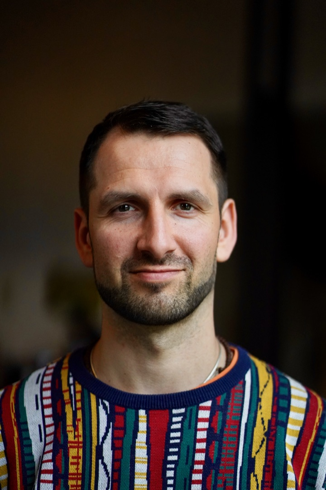

Zur Vorstellung · Kultur-Z Zwickau
Daniel Arnold
Kommunikationscoach · Unternehmer · Zwickau
Ich lebe mit meiner Tochter in Zwickau und arbeite hier als selbstständiger Kommunikationscoach. Ich begleite Geschäftsführer, Führungskräfte und Teams dabei, auch dann klar miteinander zu sprechen, wenn Interessen auseinandergehen, Verantwortung unklar ist oder ein Konflikt schon länger im Raum steht.
Mein beruflicher Weg verbindet Kommunikation, Pädagogik und unternehmerische Praxis. Bevor ich Arnold Coaching gegründet habe, war ich über mehrere Jahre am Aufbau und Wachstum eines regionalen Bildungsunternehmens beteiligt. Heute arbeite ich vor allem mit mittelständischen Unternehmen und internationalen Teams — auf Deutsch und Englisch.
Was ich einbringen kann
Meine Stärke liegt nicht darin, für jedes Fachthema sofort eine fertige Antwort zu haben. Ich kann zuhören, unterschiedliche Perspektiven erfassen und sichtbar machen, worüber eigentlich entschieden werden muss.
In meiner Arbeit erlebe ich regelmäßig, dass Organisationen nicht an fehlenden Ideen scheitern, sondern daran, dass Menschen aneinander vorbeireden, Rollen unklar bleiben oder wichtige Stimmen zu spät gehört werden. Ich kann solche Gespräche strukturieren, ohne sie unnötig zu verhärten.
- Erfahrung mit Führungskräften, Teams und Veränderungsprozessen
- pädagogischer Hintergrund und Arbeit mit jungen Menschen
- internationale Erfahrung und Arbeit in mehrsprachigen Kontexten
- Erfahrung in ehrenamtlichen, europäischen Volunteer-Strukturen
- ein unabhängiger Blick, der nicht an eine Parteimitgliedschaft gebunden ist
Warum Zwickau
Zwickau ist für mich nicht nur mein Wohnort. Meine Tochter geht hier zur Schule, ich bin im Elternrat von Schule und Hort aktiv und habe über meine Arbeit Einblicke in Unternehmen, Bildung und Sport der Region bekommen. Dazu gehört auch ein früheres Kommunikationscoaching beim BSV Sachsen Zwickau.
Ich sehe mich hier für die kommenden Jahre verwurzelt. Gerade deshalb interessiert mich die Frage, wie die Stadt auf die Veränderungen vorbereitet werden kann, die wirtschaftlich und gesellschaftlich vor ihr liegen.
Meine Perspektive auf Kultur & Stadtentwicklung
Kultur ist für mich größer als einzelne Veranstaltungen oder Einrichtungen. Sie zeigt sich darin, wo Menschen einer Stadt zusammenkommen, was sie miteinander verbindet und welche Erfahrungen sie gemeinsam machen können.
Mich interessiert besonders, wie Sport, Musik, Theater, Bildung und Stadtgesellschaft stärker zusammengedacht werden können. In Zwickau gibt es dafür bereits starke Orte und Institutionen — unter anderem die Stadthalle, den FSV, das Theater und das Robert-Schumann-Konservatorium. Sie stehen jedoch häufig eher nebeneinander, als gemeinsam Wirkung für die Stadt zu entfalten.
Die Stadthalle könnte beispielsweise mehr sein als ein Veranstaltungsort: ein Ort, an dem sich unterschiedliche Teile der Stadt begegnen. Auch Entscheidungen rund um Sportstätten sollten deshalb nicht nur nach ihrer Funktion für Training oder Verwaltung betrachtet werden, sondern ebenso danach, welches Erlebnis sie für Zuschauer schaffen und welche Bindung an die Stadt daraus entsteht.
Wie ich an die Aufgabe herangehen würde
Ich möchte nicht von außen erklären, was Kultur-Z tun sollte. Zuerst möchte ich verstehen:
- Wer arbeitet dort bereits mit welchem Auftrag?
- Welche Themen und Entscheidungen liegen tatsächlich im Gremium?
- Was funktioniert schon gut?
- Wo fehlt eine Perspektive, Verbindung oder klare Kommunikation?
- Wo kann mein Beitrag konkret etwas verändern — und wo nicht?
Danach lässt sich ehrlich entscheiden, ob die Aufgabe, die Menschen und der Rahmen zueinander passen. Für diese Kennenlernphase bin ich offen und bereit, mich aktiv einzubringen.